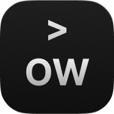

OpenWiki turns the things you save into connected Markdown you can actually use.
OpenWiki downloads, reads, and turns every source into structured pages.
Every source, person, company, and topic becomes a page—with backlinks built in.

Turn what you save into what you know.